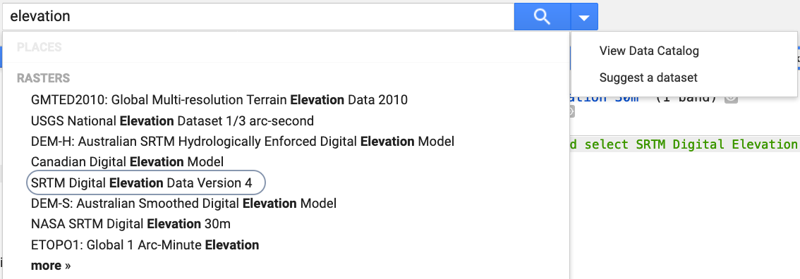

GOOGLE EARTH ENGINE FOR ECOLOGY AND CONSERVATION
Practical 1: Importing, exploring and visualising datasets
Access the completed practical script here.
Learning Objectives
By the end of this practical you should be able to:
- Import Google Earth Engine datasets into the code editor
- Inspect the dataset
- Visualize images in the interactive map explorer
- Use simple functions
Access your code editor The first step is to access the GEE code editor. This can be done from the earth engine home page by going to platform –> code editor. Alternatively, you can access it directly at https://code.earthengine.google.com/
Importing datasets There are two ways to import datasets into the GEE code editor. We will run through both of these in this practical. The first method is to use the search bar. We will be using the NASA SRTM Digital Elevation Data 30m in the first half of this practical. In the search bar, type in elevation and select the SRTM dataset. This will also bring up the metadata for the chosen dataset. Take a look at the information provided regarding the processing of the data, dataset time periods, resolution of the bands, scaling factors (which are unique to Google’s ingestion of the data) and reference to the data source or journal article.

Import the SRTM data by selecting ‘Import’ in the bottom right hand corner. Once the dataset is in your Imports section of the code editor, rename it ‘srtm’. An alternative and a more reproducible method is to call the dataset directly into your code editor. For this dataset, which has no temporal component, we use the function ee.Image(), insert the dataset string between the brackets and save the image as an object using: “var srtm = “. We can then print the image to the console to explore the details of the data using the print() function.
var srtm = ee.Image("USGS/SRTMGL1_003"); print(srtm);
Visualization We now want to add the SRTM data to the map. We do this using the Map.addLayer() function.
Map.addLayer(srtm);
You should notice two things: 1) the visualization shows very little detail and 2) we have output the image for the full global dataset. First, let’s center the interactive map on a chosen point. We can use two approaches here a) we can find the latitude/longitude coordinates using the Inspector tool and then copy and paste these values into the Map.setCenter() function, together with the zoom level.
Map.setCenter(-84.006204, 10.431206, 10);
Let’s now look at visualization parameters. The SRTM visualization parameters need to be changed to produce better image. This is done within the Map.addLayer() function, by changing the minimum and maximum values.
Map.addLayer(srtm, {min: 0, max: 3500});
To clip the dataset to a smaller region, which can be important with big datasets, we need a specified area of interest. Use the polygon tool to create a geometry for clipping the SRTM data. This is polygon is called a feature. More than one feature make a FeatureCollection. Add the clipped data to the map, but this time we will add in a label for the image layer.
var srtm_clip = srtm.clip(polygon); Map.addLayer(srtm_clip, {min: 0, max: 3500}, 'Elevation above sea level');
Lastly, let’s further customise the visualisation, by adding in a colour palette.
Map.addLayer(srtm_clip, {min: 0, max: 3500, palette: ['blue','yellow','red']}, 'Elevation above sea level (palette)');